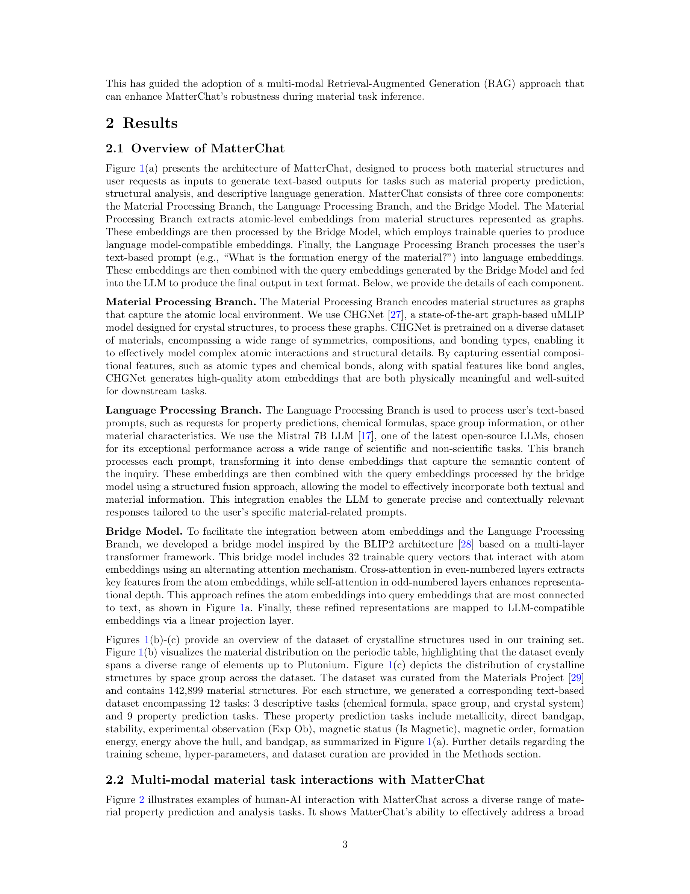
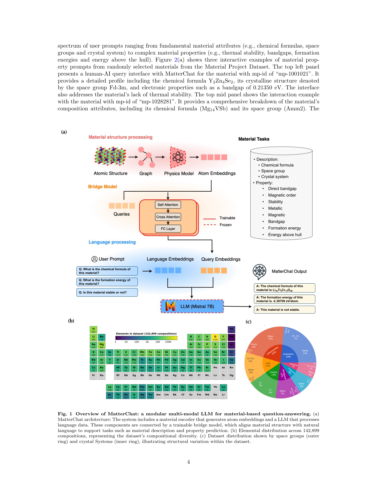
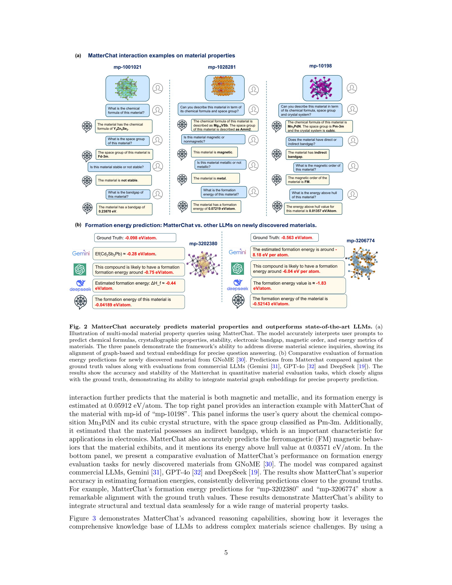
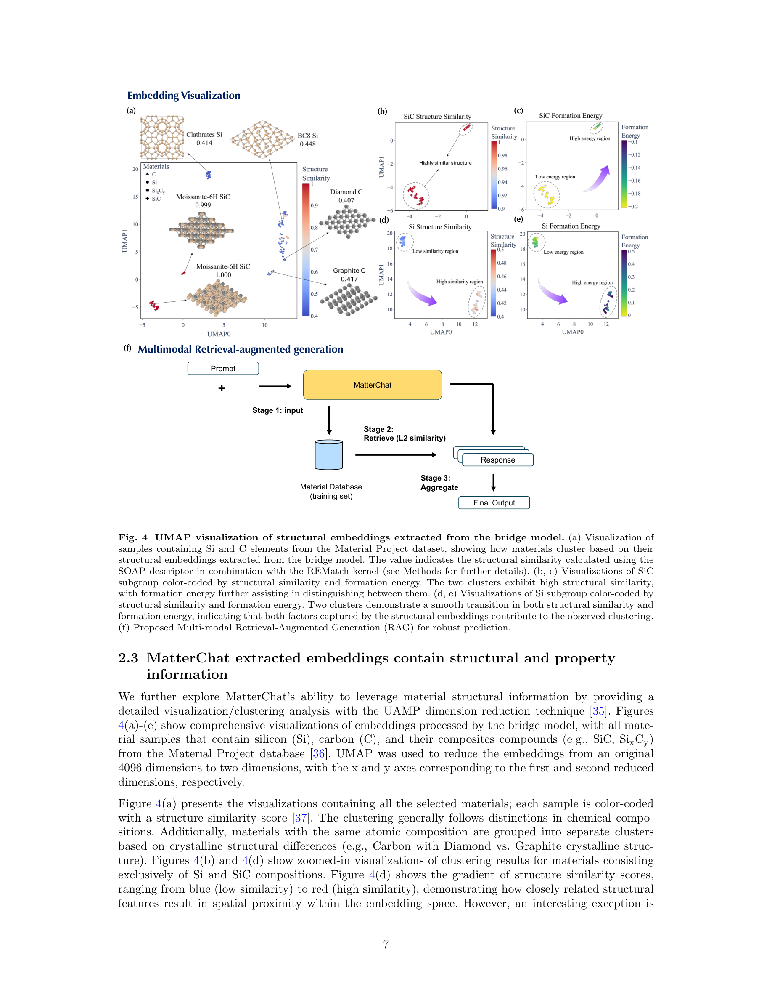
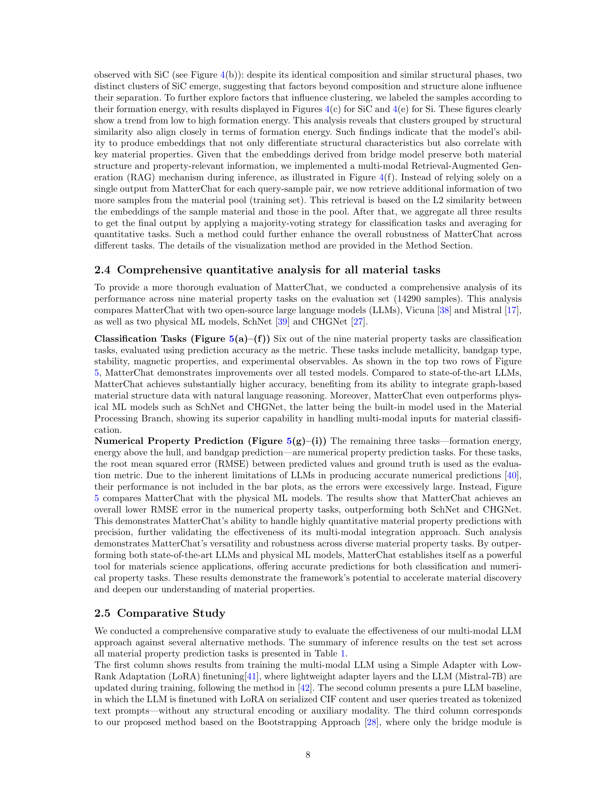

저자: Yingheng Tang, Wenbin Xu, Jie Cao, Weilu Gao, Steve Farrell, Benjamin Erichson, Michael W. Mahoney, Andy Nonaka, Zhi Yao | 날짜: 2025-04-26 | Repository: arXiv | DOI: 10.48550/arXiv.2502.13107

Figure 1
MatterChat는 무기 재료의 원자 구조 데이터와 텍스트 입력을 통합하는 구조 인식(structure-aware) 멀티모달 대형 언어 모델이다. 사전학습된 범용 기계학습 원자간 포텐셜(CHGNet)과 사전학습된 LLM(Mistral 7B)을 BLIP-2 스타일의 경량 브릿지 모듈로 연결하여, 재료 물성 예측(분류 6종 + 수치 3종)과 인간-AI 상호작용(과학적 추론, 합성 절차 안내)에서 GPT-4 및 기존 물리 ML 모델을 능가하는 성능을 달성했다.

Figure 2

Figure 3

Figure 4

Figure 5
총평: 사전학습된 uMLIP과 LLM을 경량 브릿지로 연결한다는 아이디어는 재료과학에서 멀티모달 AI의 실용적 방향을 제시한 의미 있는 연구이다. 특히 구조 정보의 완전한 보존과 인간-AI 상호작용의 동시 지원은 기존 접근법의 핵심 한계를 해결한다. 다만 수치 예측 정확도의 실용적 수준 도달 여부, 합성 절차 생성의 신뢰성 검증 부재, 단일 데이터 소스 의존 등은 후속 연구에서 보완이 필요하다.